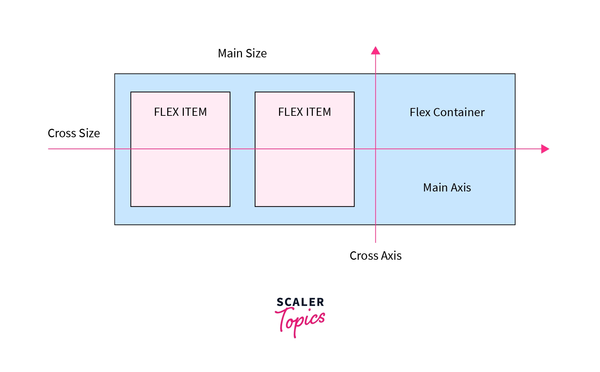

What is CSS Flexbox?
Flexbox (Flexible Box Layout) is a modern CSS layout model for distributing space and aligning items in a container, even when their size is unknown or dynamic. Flexbox is one-dimensional (row or column), making it ideal for navigation bars, cards, toolbars, and responsive layouts.
-
Flex Container: The parent element with
display: flexordisplay: inline-flex. It establishes a new flex formatting context for its children. - Flex Items: The direct children of a flex container. Only direct children become flex items.
- Main Axis: The primary axis along which flex items are laid out (horizontal by default).
- Cross Axis: The perpendicular axis to the main axis (vertical by default).
Flex Container Properties
- display: flex | inline-flex – Defines a flex container and enables flex context for all its direct children.
-
flex-direction – Sets the direction of the main
axis:
row(default),row-reverse,column,column-reverse. -
flex-wrap – Controls whether flex items wrap onto
multiple lines:
nowrap(default),wrap,wrap-reverse. -
justify-content – Aligns items along the main axis:
flex-start,flex-end,center,space-between,space-around,space-evenly. -
align-items – Aligns items along the cross axis:
flex-start,flex-end,center,stretch,baseline. -
align-content – Aligns multiple lines (when
wrapping):
flex-start,flex-end,center,space-between,space-around,stretch. - gap – Sets the spacing between flex items (modern, preferred over margins).
-
flex-flow – Shorthand for
flex-directionandflex-wrap.
Flex Item Properties
- order – Controls the order in which flex items appear (default: 0).
- flex-grow – How much a flex item will grow relative to the rest.
- flex-shrink – How much a flex item will shrink relative to the rest.
- flex-basis – The initial main size of a flex item before space is distributed.
-
flex – Shorthand for
flex-grow,flex-shrink, andflex-basis. -
align-self – Allows a single item to override
align-itemsfor itself.
Axes Visualization

Tip: The main axis is controlled by
flex-direction. The cross axis is
perpendicular to the main axis.
Interactive Examples
Flex Direction (flex-direction)
Controls the direction of the main axis. Try changing the direction to see how items flow.
.flex-row { display: flex; flex-direction: row; }
.flex-row-reverse { display: flex; flex-direction: row-reverse; }
.flex-column { display: flex; flex-direction: column; }
.flex-column-reverse { display: flex; flex-direction: column-reverse; }Justify Content (justify-content)
Aligns items along the main axis. Useful for horizontal alignment in rows or vertical in columns.
.flex-justify-start { justify-content: flex-start; }
.flex-justify-center { justify-content: center; }
.flex-justify-end { justify-content: flex-end; }
.flex-justify-between { justify-content: space-between; }
.flex-justify-around { justify-content: space-around; }
.flex-justify-evenly { justify-content: space-evenly; }Align Items (align-items)
Aligns items along the cross axis. Try different values to see how items align vertically (in a row) or horizontally (in a column).
.flex-align-start { align-items: flex-start; }
.flex-align-center { align-items: center; }
.flex-align-end { align-items: flex-end; }
.flex-align-stretch { align-items: stretch; }
.flex-align-baseline { align-items: baseline; }Flex Wrap (flex-wrap)
Controls whether flex items wrap onto multiple lines. Useful for responsive layouts.
.flex-wrap-nowrap { flex-wrap: nowrap; }
.flex-wrap-wrap { flex-wrap: wrap; }
.flex-wrap-wrap-reverse { flex-wrap: wrap-reverse; }Gap (gap)
Sets the spacing between flex items. Preferred over using margins for consistent spacing.
.flex-gap { gap: 24px; }
Flex Grow, Shrink, Basis, Flex (flex-grow,
flex-shrink, flex-basis,
flex)
Control how flex items grow, shrink, and their initial size.
flex is shorthand for all three.
.grow1 { flex: 1; }
.grow2 { flex: 2; }
.grow3 { flex: 3; }
.flex-shrink-demo .flex-item { flex-shrink: 1/3/5; width: 200px; }
.flex-basis-demo .flex-item { flex-basis: 100px/200px/50px; }Align Self (align-self)
Allows a single flex item to override the
align-items value for itself.
.flex-align-self .flex-item[style] { align-self: flex-start/center/flex-end/stretch; }Order (order)
Controls the order in which flex items appear in the flex container, regardless of their source order.
.order1 { order: 1; }
.order2 { order: 2; }
.order3 { order: 3; }Align Content (align-content)
Aligns multiple lines of flex items along the cross axis (only works if items wrap onto multiple lines).
.flex-align-content-start { align-content: flex-start; }
.flex-align-content-center { align-content: center; }
.flex-align-content-end { align-content: flex-end; }
.flex-align-content-between { align-content: space-between; }
.flex-align-content-around { align-content: space-around; }
.flex-align-content-stretch { align-content: stretch; }Flex Flow (flex-flow)
Shorthand for flex-direction and
flex-wrap. Example: flex-flow: row wrap;
.flex-flow-demo { flex-flow: row wrap; gap: 12px; }Best Practices & Accessibility
- Use Flexbox for one-dimensional layouts (row or column).
- Combine with media queries for responsive design.
- Use
gapfor spacing instead of margins. - Test layouts on different screen sizes and browsers.
- Use semantic HTML for better accessibility and maintainability.
-
Use
align-contentonly when you have multiple lines of flex items. -
Prefer
orderfor visual reordering, not for logical/semantic order (for accessibility).